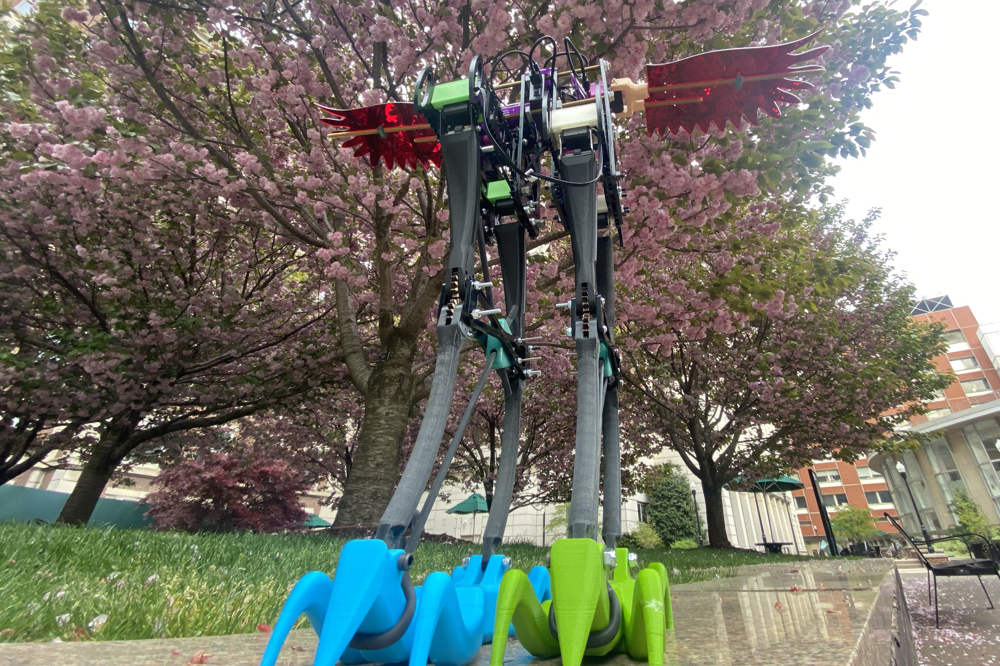

Machine Design Fall 2021
Automated robotic linkage mechanism
I worked in a team of 5 mechanical engneiring seniors to design, build, and control a complex linkage mechanism to press arcade buttons in sequence as quickly as possible. We were responsible for kinematic planning, creation of a detailed 3D model, manufacturing of linkage components, wiring, sensor usage, signal processing, transmission design, control system tuning, and actuation.

Team Up began trying to solve the problem of communication between people who play video games. The initial idea was mobile/web app that could help coordinate gaming sessions between busy college students.

With the user feedback in mind, I created a wireframe that users could interact with. I tested a couple of layouts for different pages.

For my final design loop, I focused on the design of the application and features for gamers. Team Up automatically creates text and voice channels for each game. In addition, there are team wide general voice and text channel as well as an announcements channel for admins to send team-wide messages.
Period.
This project was born from the challenges of women finding menstrual products on campus. While some locations are known to contain menstrual products, they may be out of stock. Therefore, we wanted to create a user-led database which can keep track of which restrooms have menstrual products in stock on campus. When doing user interviews, many users said they would be willing to contribute to the database by responding to a pop up which asks them whether there will be menstrual products left in the restroom after they leave. By having a trust worthy user base such as Columbia and Barnard students, we are more confident in allowing users to provide data that we will use.
While we were happy creating a student led database, this did not truly solve the problem at hand. To solve the problem, we designed an anonymous messaging system within the application. This allows users to interact with each other and ask each other for menstrual products. The users required anynimity to be comfortable posting on the platform. This raised concerns of authenticity for users interacting with each other. For this reason, we required usetrs who are creating their accounts to verify their status as a student through Columbia/Barnard authentication.